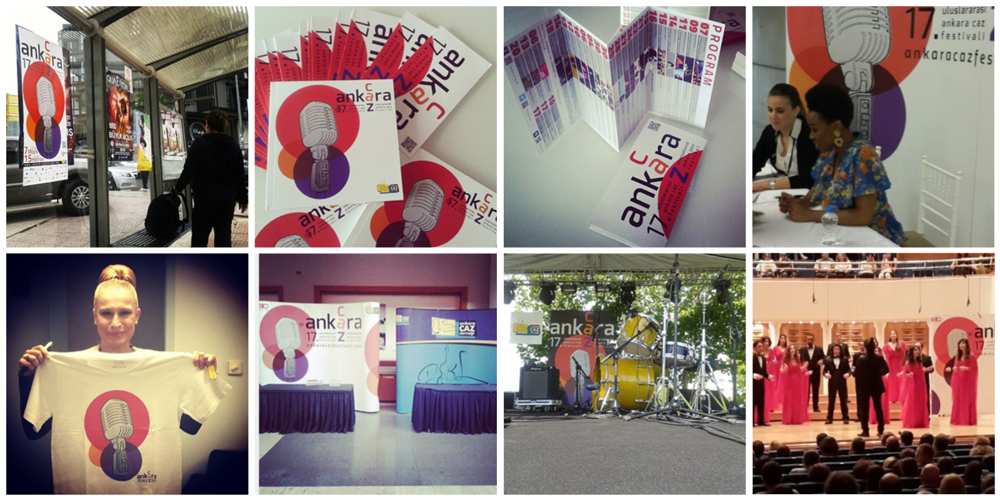
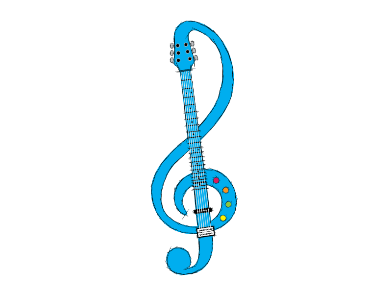
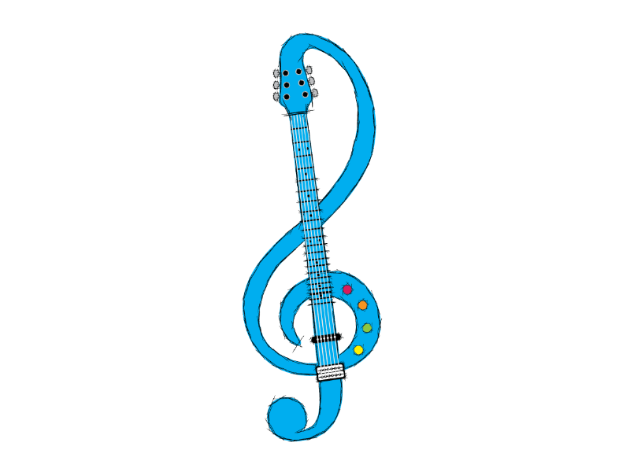
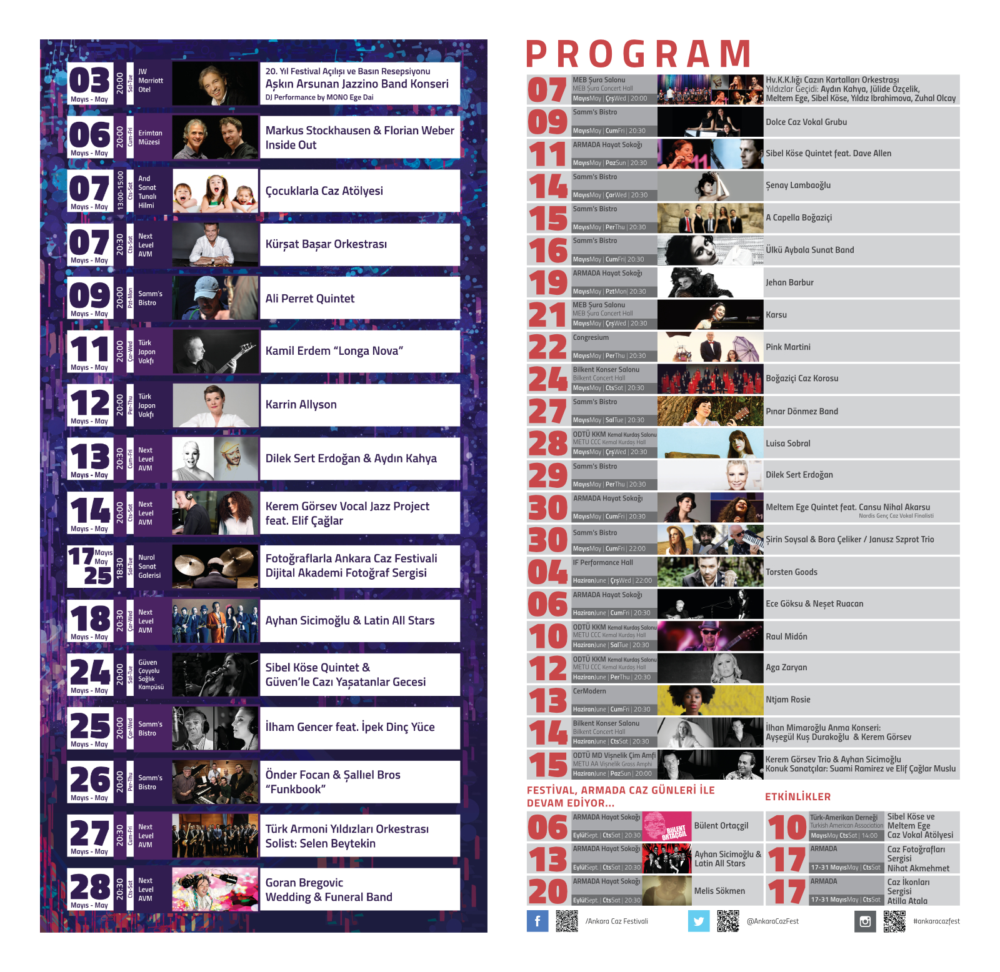

Ankara International Jazz Festival
2007-2015Lead designer for Turkey's premier jazz festival from 2007-2015. Developed comprehensive visual systems spanning 20+ touchpoints: from poster campaigns to environmental installations. Managed brand evolution while maintaining visual consistency. Created design frameworks that supported festival growth from regional event to Europe Jazz Network member with 50,000+ annual attendance. Design templates remain in active use.
Festival Growth & Impact
Supported festival growth from regional event to internationally recognized destination. Welcomed 50,000+ annual attendees and hosted legendary performers including Herbie Hancock, Diana Krall, Billy Cobham, Jethro Tull, and Diana Schuur. The festival became a member of Europe Jazz Network during this period.
Design Philosophy
Jazz taught me that the most powerful brands aren't rigid; they're responsive. Each year's festival design needed to feel both fresh and familiar, just like a great jazz performance. The visual identity became a living system that could adapt to different artists, venues, and cultural moments while maintaining its core personality.
 

Comprehensive Design Ecosystem
Print & Publications: Annual poster campaigns distributed across 3 cities, 32-page festival programs, artist information sheets, VIP invitations, and complete calendar systems.
Environmental & Large Format: Stage backdrops and scenic installations, giant banners up to 20x6 meters, venue wayfinding systems, and architectural graphics that transformed festival spaces.
Digital & Motion: Complete website design, social media campaign templates, email marketing systems, motion graphics, and promotional videos shot and edited on-site during live events.
Results & Impact
Festival Growth: Grew from regional event to Europe Jazz Network member with UNESCO International Jazz Day partnership. Maintained 50,000+ annual attendance across 10-day festival programming.
International Recognition: Hosted legendary performers including Herbie Hancock, Diana Krall, Billy Cobham, Jethro Tull, and Diana Schuur.
Design Legacy: Created visual templates that remain in active use today, 2+ years after my involvement ended. Established design standards that influenced other Turkish cultural events and built sustainable systems for future festival teams.
Project Statistics
- 28 festival editions designed
- 15 years as primary designer
- 50,000+ annual attendees
- 20+ touchpoints designed annually
Long-Term Value
Starting this project as a student designer, I grew alongside the festival. Learning to balance creative vision with practical constraints, manage multiple stakeholder expectations, and create sustainable design systems that evolve over time. The visual templates and systems I developed continue to be actively used by the festival today, proving their lasting value. This demonstrates how sustained design partnership creates infrastructure that benefits cultural institutions for years beyond the original collaboration.
